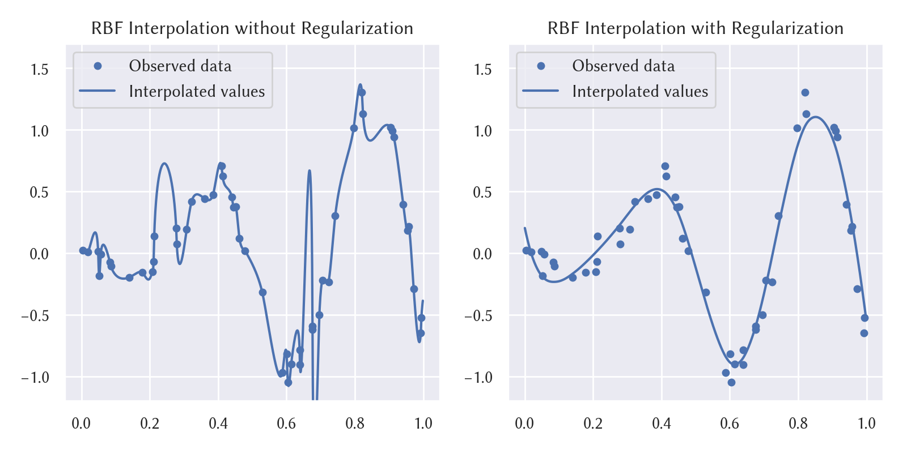

rbf-interpolation
Radial basis function (RBF) network for scattered data interpolation and function approximation.

Header
#include <mathtoolbox/rbf-interpolation.hpp>
Math
Overview
Given input data:
this technique calculates an interpolated value for a specified point by
where is a user-selected RBF, and
are the weights that are calculated in pre-computation.
Pre-Computation
The weight values need to be calculated in pre-computation. Let
where
The following linear system is solved for :
LU decomposition can be used for solving this problem.

This approach offers exact interpolation: the interpolated function passes through all the scattered data points exactly.
Pre-Computation with Regularization
The original formulation above is not robust when the data points are dense and noisy. For such cases, it is effective to use a feature called regularization in pre-computation. In other words, this feature enables scattered data approximation rather than scattered data (exact) interpolation.

This feature is achieved by considering a regularization term in the calculation of the weight values. More specifically, the following minimization problem is solved:
The derivative of this objective function with respect to is
Thus, the solution of the above minimization problem is obtained by solving the below linear system:
Usage
First, instantiate the class RbfInterpolator. In its constructor, an arbitrary RBF kernel (in the form of std::function<double(double)>) can be specified.
The followings are pre-implemented as function objects and can be easily specified:
GaussianRbfKernelThinPlateSplineRbfKernelInverseQuadraticRbfKernelLinearRbfKernel
If no kernel is passed to the constructor, ThinPlateSplineRbfKernel (i.e., ) is chosen by default.
Then, set the target scattered data by the method:
void SetData(const Eigen::MatrixXd& X, const Eigen::VectorXd& y);
where
represents the data points and
represents their values.
Next, calculate the weight values by the method:
void ComputeWeights(const bool use_regularization = false,
const double lambda = 0.001);
When use_regularization is set true, the weights are calculated in the manner of scattered data approximation, rather than scattered data interpolation. When the data is noisy, approximation is usually a better choice.
Once the above procedures are performed, the instance is ready to calculate interpolated values. This is performed by the method
double CalcValue(const Eigen::VectorXd& x) const;
Time Complexity
The pre-computation needs to solve a linear system, which takes more than . An interpolated value calculation takes . See [Carr et al. 2001] for details.
Useful Resources
- Ken Anjyo, J. P. Lewis, and Frédéric Pighin. 2014. Scattered data interpolation for computer graphics. In ACM SIGGRAPH 2014 Courses (SIGGRAPH '14). Article 27, 69 pages. DOI: https://doi.org/10.1145/2614028.2615425
- J. C. Carr, R. K. Beatson, J. B. Cherrie, T. J. Mitchell, W. R. Fright, B. C. McCallum, and T. R. Evans. 2001. Reconstruction and representation of 3D objects with radial basis functions. In Proc. SIGGRAPH '01. 67–76. DOI: https://doi.org/10.1145/383259.383266